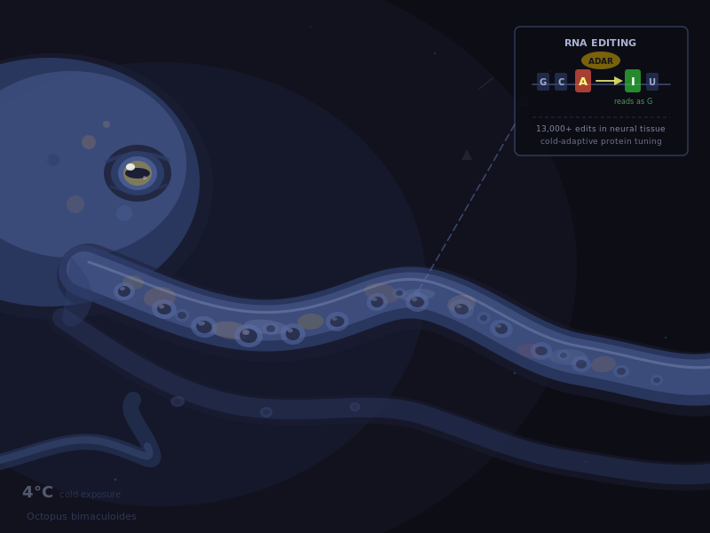
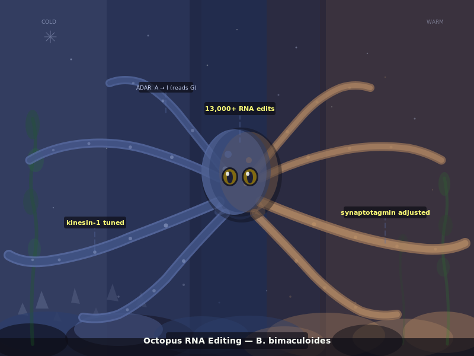
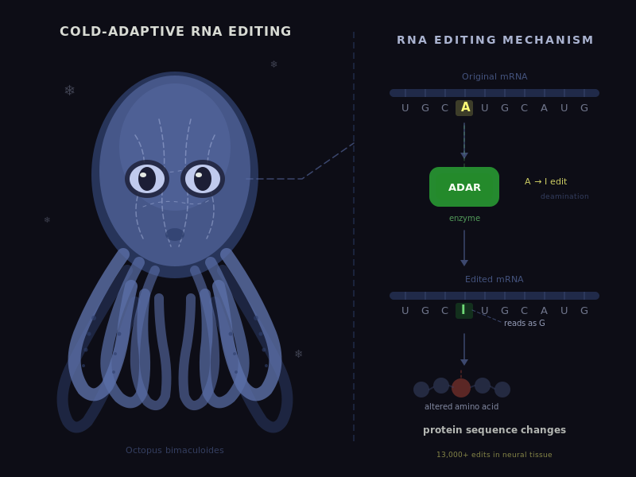
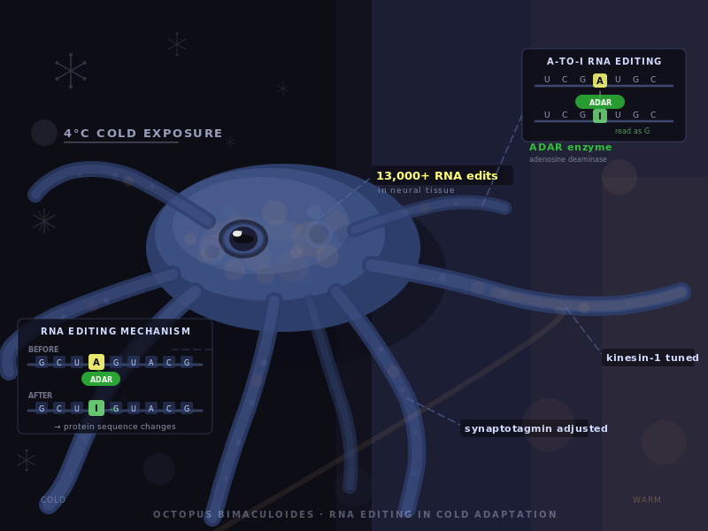

Three visually distinct versions of the same biology illustration, generated in parallel by Claude Opus. Gemini Vision analyses all three simultaneously and produces a synthesis brief — identifying the best elements of each. Claude then executes the final illustration from that brief.
Octopus bimaculoides edits its own RNA at massive scale in response to cold temperature — over 13,000 protein-altering edits in neural tissue within hours of cold exposure. ADAR enzymes convert adenosine (A) to inosine (I), effectively changing protein sequences without altering DNA. Specific edits tune kinesin-1 motor speed and synaptotagmin calcium sensitivity for cold conditions. Wild octopuses show seasonally higher editing frequencies in winter.



Rich skin/tentacle texture. Clear A→I→G diagram with ADAR label. Temperature indicator ("4°C cold exposure") and "13,000+ edits in neural tissue" text effectively communicates the story trigger.
Cold/warm environmental gradient as visual driver. Rounded full-body mid-shot composition. Specific protein labels on arms ("kinesin-1 tuned", "synaptotagmin adjusted") ground the biology in specifics.
Clean, schematic RNA editing mechanism diagram with ADAR enzyme shape, before/after mRNA strand, and "protein sequence changes" label. Clear and concise scientific communication.
Mid-shot Octopus bimaculoides, body dominant in frame, arms sprawling wide. Left side dark/cold (deep navy, periwinkle, subtle snowflake geometric elements). One tentacle extends right into a slightly warmer zone (muted clay/slate tones). Octopus has rounded form of Version B with textured skin of Version A. ADAR inset diagram emerges from one arm via dashed callout. Version C's RNA mechanism panel sits to one side. Cold/warm zones labelled. Annotation callouts for kinesin-1 and synaptotagmin on specific arms.
